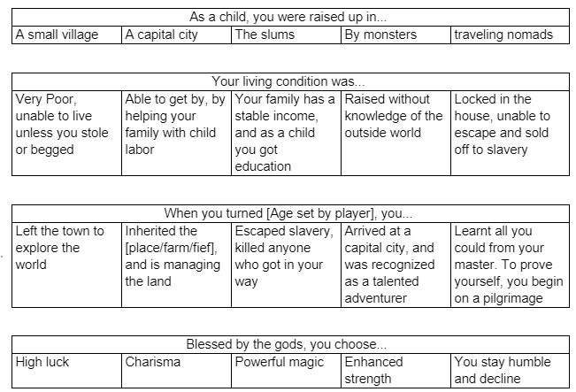
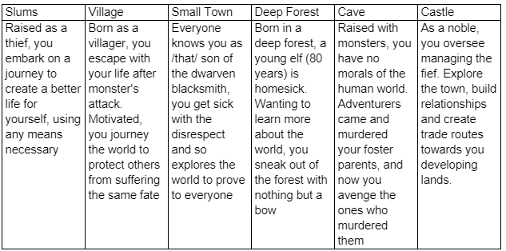
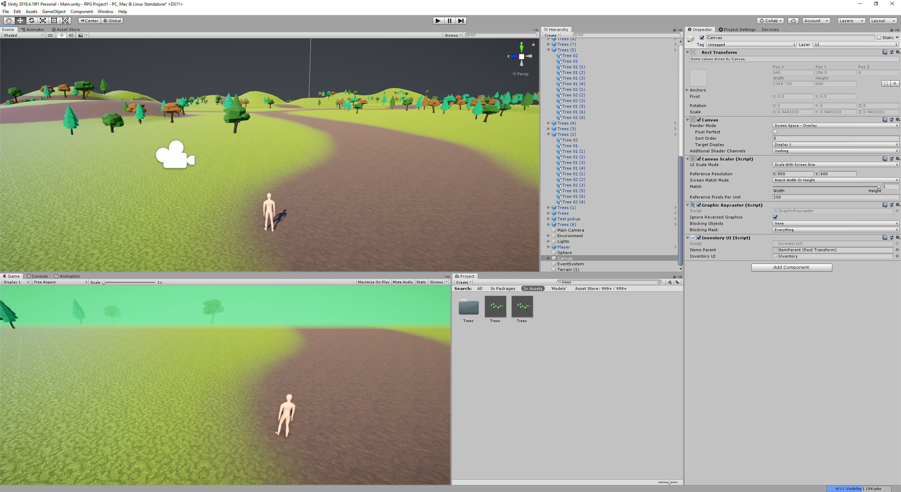

Project Description
This game design document outlines and describes the details of "Rebirth", an open-world RPG game with original characters and story and unique game mechanics.
This project is to create a world that gives the player the freedom to experience what a fantasy world is like. Able to roleplay as different races, players are given a fresh take on the roleplay fantasy adventure as they create their own path into the world. "Rebirth" is not a generic dungeon crawler, as it expands on existing game mechanics.
In the world of "Rebirth", players are given the option to play as many races, from humans to elves to even beast people. Customization is an important part of the gameplay, editing both races and classes, players can choose their gameplay style that they fit with the most. Incorporating a diverse skill tree, you can become a magic swordsman, agility archer or even a mage tank.
Gameplay will be unique depending on which race and background story that the player picks from. An elven warrior exploring the world after being stuck in the forest for 80 years, to an escaped beast person becoming an adventurer to buy back their family, each playthrough will be different and unique, adapting to anyone's playstyle. Players are also able to experience the spice of life, managing small farms to big fiefs, building relationships with villagers or becoming a bandit with a group of thugs the possibilities are endless in "Rebirth".
Characters
Humans are the main race that populates the world of "Rebirth". As a human, their race is a jack of all trades, master of none. Able to use both the art of magic and swords, humans occupy the majority population of this world. Due to their ability to adapt to any environment, they can be found all over the world. The technology level of humans has stagnated, as a result of the development of magic. From lifestyle magic that can warm up water to offensive magic that can shoot meter long fireballs at enemies, humans have no reason to develop any further technologies. Because of the population of humans, it is understood that this race can have an affinity to all the elements, fire, water, wind, air. However, there are only some with the ability to control light (holiness) and darkness(nightmares/curses).
Elves are a demi-human race that exists alongside humans. Commonly known for their distinct long ears, elves are a symbol of goodwill and long life. Able to live for hundreds of years, they are often regarded as wise and knowledgeable. However, due to their lifespan, elves birthrate is much lower than humans, which is why they are commonly found secluded in forests. Elves have a high affinity to the wind element, able to cast it on their arrows and bows, increasing their range and accuracy. Due to the rarity of elves, it is uncommon but there have been several attempts of slavery of race, with a common belief that a virgin female elf will give you long life and infinite luck.
Dwarves are commonly associated with their smiting, mining and crafting skills. Part of the demi-human race, they are most famous for their ability to create legendary weapons known to kill dragons and vampires. There is legendary folklore of a villager becoming a hero, after acquiring the heroic holy sword wedged in-between bedrock created by a fallen dwarven king. Dwarves are described as short and ugly, however, crossbreeding with humans and other races have given them a unique look. They have an affinity to earth magic, helping them form beautiful weapons using both techniques passed down from generations and magic ore mined. Dwarves live near or on mountains, caves or other places where ore are commonly found, as it serves as the lifeblood of the species.
Beast Folk are humans with animal-like qualities. Often found in secluded villages, they are often discriminated upon due to their features, frequently called as a sub-human race. However, many scholars believe that to be a common stereotype, as they are a demi-human race. Beast people inherit the powers that the animals give them and can draw out their latent power. There are many categories of these races, from dogs, cats, rabbits to bears, lizards and dragons. Each animal gives different powerups, from enhanced eyesight to more tough skin. Due to this, beast folk are the most common slave, able to work long hours without feeling tired. As a result of the increased physical strength, they lack any affinity towards magic, and most are unable to use it.
Goblins are a race of sub-humans, considered a pest that requires exterminating. Able to mature into adulthood in a few days, goblins kidnap females of other races to populate. There has been no known instance of female goblins existing. Known for their green skin, yellow bulgy eyes and aggressive stance towards anything living, they are a weak and pathetic race. An adult human farmer can hunt individual goblins, ranking them as one of the weakest races, but if sounded by a hoard of them, they can quickly take over even the most skilled farmer. If lived long enough, goblins can evolve into hobgoblins or goblin mages, with an increase in both threat level and intelligence.
Orcs are a mutated race of goblins, often coming from human or elven lineage mixed in. They are a brutish, aggressive, ugly and malevolent race, often serving an evil power. They eat meat, including the flesh of humans and can even indulge in cannibalism. Having below-average intellect, they exist as nomads, often destroying ecosystems with their unending appetite. They can be summoned by an evil entity or can be birthed by orc women.
Kobolds are a sub-human race. Visually, they are small humanoid creatures that resemble a mix between a long snout dog, a pig and a hairy rat. They are found in all climates but prefer dark, damp underground lairs or overgrown forests. Kobolds can build a complex and massive cave network, which can be quickly filled due to their natural reproductive cycle. They have no affinity for magic and are weak individually.
Story
As a player, there are multiple races, factions and backstories that the player can choose from. There are different scenarios/game starts that the game can take place in. Following a list, here are examples of what to expect in "Rebirth"
Choosing Race
The story depends on which race, and background that the player chooses from. There are 4 options to pick from, and each race has different pros and cons. Humans are the most populated NPC in this world, so they have an excellent cultural background. For example, they can take more quests, or have human-specific dialogue/places that they can access. Elves have a long lifespan; due to this, they have a high affinity towards ranged magic/bows. Dwarves are typically played as a support/frontline tank, due to their strong build and amazing craftsmanship. Beast folk have no affinity to magic, but instead, use overwhelming power from the animals that the inherent to crush their foes.

Choosing Appearance/Gender/Skills
Players will be able to customize the player's appearance, using the baseplate of the races as a default start. They will be given the option to change genders and appearances, like adding unique hairstyles or tattoos and then move on to creating a backstory. They can also choose the starting clothes that the character wears, from rags to noble dresses. The creation menu will also have a skill tree, like the tabletop game D&D, where a limited number of points must be distributed towards a set number of options.
Choosing Backstory and Class
Choosing the backstory of the character gives context to the story, and it allows players to unlock and change the story depending on their choices. To choose what the player will select, a bunch of options will be presented to them. From the selected, the game makes a preprogrammed guess to what the player will be suitable for. The examples are as follows.
Theme
Set in medieval fantasy land, this game explores the different perspectives on life. From a young adventurer off to see the world, to a noble overlooking his lands. This game should have a feeling of expansiveness, openness and positivity. For this to work, a mix between game aesthetics and music will be used to enhance this feeling.
Story progression
The story takes place depending on what the player chooses as the character's backstory. There are multiple starting locations, from the dirty slums near the capital city of Milim to the never-ending forests of Ether. The map of "Rebirth" will be built from the ground up, incorporating many places that the player can explore. There are multiple basic plots that can happen in this game. The starting locations will dictate what the plot of the story will be.
To give an example of what to expect in "Rebirth", here are a few stories that can happen.
Gameplay
The gameplay of "Rebirth" will be a third person, birds-eye view of the character. As it is an open-world RPG game, it will emphasize 3d movement and high dexterity gameplay, such as dodging and predicting where the enemy will be.
Goal
For the goals in "Rebirth", the player gets to decide both the long term and short-term goals through the character's backstory. The game will supply missions and quests depending on the context of the background.
For long term goals, it is incentivized to level up the character, able to roam into higher-level locations, such as the undead deserts or the hostile wastelands. As well as the main objective, there is a customized second objective, which can range from finding lost family across the continent or murdering everything due to past trauma to become number 1.
For short term goals, defeating monsters, taking quests from the adventurer's guild and advancing to the next level.
User Skill
This game is everyone, from 12-50. Skills that are wanted in this game include:
Problem Solving = Dungeons in this game consists of puzzles as well as traps and mazes. Exploration of these dungeons will require solving problems that arise, as well as memorizing the layout of the place.
Strategies = As there will be classes in the game, each class will have different playstyles. As well as friends, enemies will also have different skillsets. As the player, they must account for the future as well as make quick decisions during battle.
Managing resources = Health, mana and money are resources that the player must keep track of in order to be successful in this game. Other resources include skill points and friend points.
Game Mechanics
In the game "Rebirth", a numerous number of mechanics will need to be implemented for the game to function. Due to the genre of a role-playing game, a detailed conversation system will be at the centre of attention. The ability to converse with NPC's and establish relationships will be overlooked if the conversation system is too slow or uninteresting. Slow scrolling text or linear options will make the game stale and boring to play.
Depending on how the player treats each NPC in the game, they can establish a friendship. That friendship's progression can change the more you interact with them or do their quests. By establishing friendships with NPCs, you can earn favours or help from these NPCs in various ways. On the other hand, treating people awfully or rubbing them the wrong way can make them dislike you, even become an enemy. Having enemies in this game will cause different chain reactions, such as being banned from stores if you are hated by the store owner, or being reported if they catch you doing crimes whereas a friend would choose not to say anything.
Other game mechanics that players will use is the inventory system. Using Skyrim's inventory system as inspiration, a weight-based system will be used in order to not encumber the player with a needless organization of meticulous optimizations. There will be a limit to the amount a player can carry, however, they may expand this limit by crafting bags, satchels etc.
In this game, each race has different affinities towards magic. Depending on what race you are, you can specialize in using different kinds of spells, most of which are elemental in nature such as Fire, Earth, Water, Air. Most of these are offensive in nature, but there are those that have healing or reparative in properties. And there are even those that are long lost secret arts that have been scattered across this world. In-game, the player uses an MP meter as a resource to use any magic that they've learned or innately know. Depending on the element they are utilizing, they can cast a variety of different spells that aren't just offensive in nature. Some can provide important buffs, weaken enemies, inflict status effects, or heal.
The combat system will be simplified in order to reach out to all ages. Even though it will be simplified, there are still game metals that are useful. For example, kiting enemy monsters means that you hit them and then dodge, repeating. Combat can be engaged in multiple different ways, from enraging NPCs to sneaking up to them and stabbing them in the back. Using weapons, each one will have different stats. For example, if the player wants longer to reach, a spear will be the weapon of choice. There are also ranged weapons, like bows or magic that can be used.
Looting is a common practice after fighting mobs. After taking inspiration from multiple games like Minecraft and fallout, we decided on two ways that the enemies can drop items. If you go hunting for materials, it would be a waste of time to go through every single body. Instead, items drop out as Minecraft does and the player can scoop the items of the floor efficiently. However, this system does not work out when fighting humanoid entities, as they often carry multiple loots, such as clothing and armour. In this regard, a fallout inventory system is used so that players can individually pick up whatever they need.
Movement is done through the keyboard, with all directions using the WASD keys. Since the game is set in the third person, looking and aiming is done through the mouse. There are movement skills that the player can obtain, like dashing, sprinting or teleporting. Unlocking these movement options is dependent on the race that the player chooses. For example, beast kin cannot use teleport as they do not have an affinity towards magic but can leap much further than any other race.
Items and Powerups
Items are not only store-bought or scattered across the world. Items can also be crafted by gathering different materials found everywhere. From random places across the world to items dropped by enemies.
Items have many uses. Most are to aid you in small to life-saving ways, such as restoring your health and mana or boosting your character's stats and empowering them. Items have different rarities and their value in monetary and usage will be stronger the higher the tier of their rarity.
Progression and Challenge
Progression in the game will be based on the standard levelling system, as it is most familiar with all generations of players. In order to level up, the player gains experience through many interactions, from winning battles, finishing quests and maximizing relationships statuses with NPCs.
To scale with the difficulty, the ability to play better will become more apparent the longer the game is played. Dodging skill shots and investing in better equipment will also help with the scaling difficulty.
Losing
In this game, there's a multitude of conditions that will result in a game over. The first and foremost is obviously your health reaching zero, reaching death. This will force a game over and send you back to the last save you've made. There may also be special events where players must complete timed events quickly or it will result in an instant Game Over when the timer runs out and must either restart the event or return to their last save point.
Art Style
The art style for “Rebirth” will be low poly, meaning that everything will be simplified. In order to tell an expansive story, as a team, we decided that it will take too much effort to create complex models in order to tell a story. Another factor for this style is that we considered the systems that our player base use, expressing a clear performance guideline that is suitable for all ages.
The colour theme of this game will be bright and colourful, making the game feel alive. With highly animated characters and background, like the wind blowing through trees making the leaves wave around. It will create a sense of adventure for the player, making them feel like they are missing out if they don't play.
Music and sounds
The music will be composed of different unique instruments belonging back in the medieval ages. As for the themes of the songs, it will be dependent on the situation that the character is in. Based on different environments, each theme song will represent what the climate is. For example, a snowy area will be having a calm flute tune or fast short pitches depending on the weather.
It is important to have a lot of sound effects for each action the player does, as the sounds give instant gratification towards the player. Inventory menus should have a unique beat, signifying that the player is safe from harm. Combat music should be dependent on the mob that the player is battling against. Sharp, precise notes and organized rhythmic gameplay should come hand in hand when fighting boss fights. Listening to the music while fighting the boss will give the player an indicator of when to attack, and when to dodge.
Demographic
The targeted demographic for this game is between 12-50.
It is meant for everyone to play, regardless of gender.